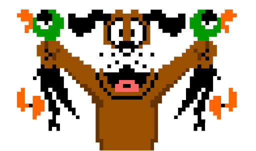
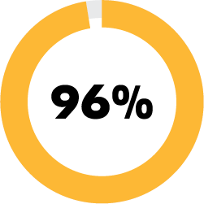

Deep web, a problem…
You may heard the phrase “Deep Web”, but confused it with "Dark Web".
the Dark Web, is a corner of the internet lies within the deepest points of the internet abyss. It uses protocols to provide anonymity
This secret world is not always realted with illegal activities. But it is true that it the Dark Web is full of illegal drug and firearm transactions, pornography, and gambling
However, Dark Web is only a small portion of the Deep Web
Image from 55
Deep Web is the part of the World Wide Web that is not discoverable by means of standard search engines, including password-protected or dynamic pages and encrypted networks.
Why the Deep Web is a problem for us?
Contextual web, Dynamic content, Limited access content, Unlinked content....
That is the Deep Web.
These make the difficulty to retrieve usable information from the Deep Web. It is much more than scrape from the Surface.
Let's talk about it a little bit.
It's like grab an egg V.S. capture a duck. When you are facing an egg, all you need to do is go and get it(the same thing you do for static web pages). When you are facing a duck, you may need to do something to make the duck appear, shoot it, then go and get it.
Deep Web contains a large volume of data. Some claims that around 96% of the www belongs to the deep web. (Unchecked)
We need a tool which is capable of interacting with deep web pages, handle dynamically generated elements.
This tool should also be simple, natural, efficient, scalable and multipurpose.